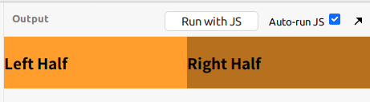
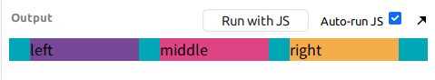
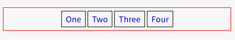
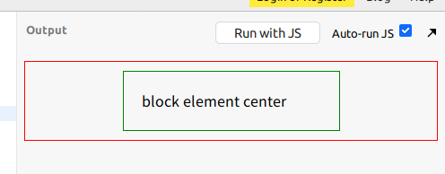
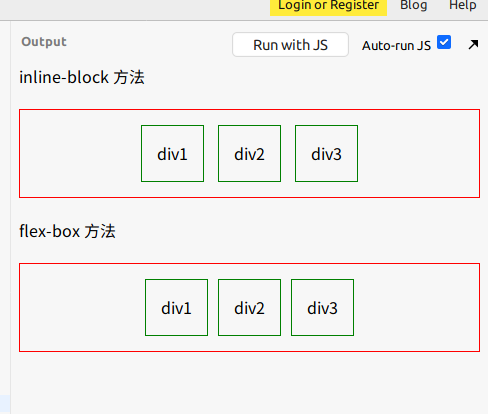
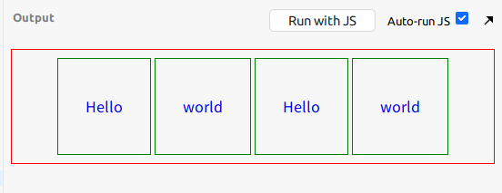
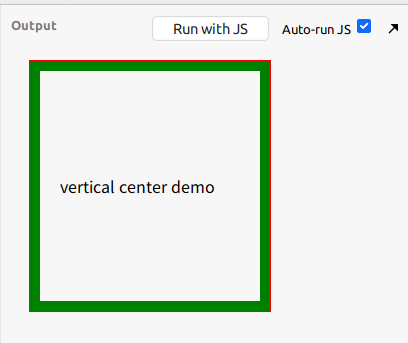
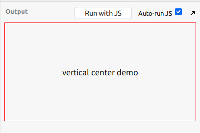
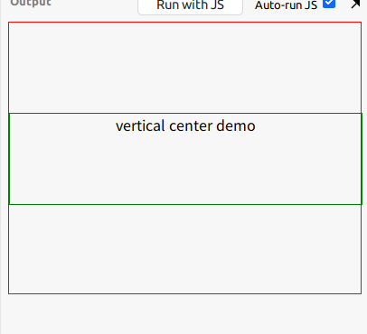

左右布局
左右布局实现的效果图如下

主要 html 代码如下<section class="container">
<div class="left-half">
<article>
<h1>Left Half</h1>
</article>
</div>
<div class="right-half">
<article>
<h1>Right Half</h1>
</article>
</div>
</section>
使用绝对定位
使用 position 绝对定位，用两个 div 宽度分别占 50%,就可以得到两个左右布局的 div 了
主要 css 代码.left-half {
background-color: #ff9e2c;
position: absolute;
left: 0px;
width: 50%;
}
.right-half {
background-color: #b6701e;
position: absolute;
right: 0px;
width: 50%;
}
使用 float + clearfix 清除浮动
用 float 做左浮动也可以做到左右布局.当然这里也需要在父元素身上加上清除浮动，日常的做法是在父元素上添加 clearfix
主要 css 代码* { box-sizing: border-box; }
.left-half {
background-color: #ff9e2c;
float: left;
width: 50%;
}
.right-half {
background-color: #b6701e;
float: left;
width: 50%;
}
.clearfix::after {
content: "";
display: block;
clear: both;
}
使用 inline-block
将要排列的 div 元素变成 inline-block
主要 css 代码div {
display: inline-block;
width: 50%;
}
.left-half {
background: #ff9e2c;
}
.right-half {
background: #b6701e;
}
但这种方法有个不可取的地方，就是它把 div 变成了内联元素后，在 html 中只有去掉了他们(div)之间的空格才能进行左右布局
使用 flexbox
常言道: flex 大法吼啊
主要 css 代码section.container {
display: flex;
flex-direction: row;
}
div {
flex: 1 1 auto;
}
.left-half {
background-color: #ff9e2c;
}
.right-half {
background-color: #b6701e;
}
flexbox 布局方式，可以将父容器变成一个 flexible box，这个 box 可以让子容器取得和其相等的大小空间,这个时候就可以不用考虑其宽和高的问题了
左中右布局
左中右布局实现的效果图如下

主要 html 代码如下<div class="wrap clearfix">
<div class="left">left</div>
<div class="mid">middle</div>
<div class="right">right</div>
</div>
主要 css 代码如下.wrap {
margin: 0 auto;
width: 100%;
background: #00a8b5;
}
.left, .mid, .right {
float: left;
margin-left: 5%;
width: 26%;
}
.left {
background: #774898;
}
.mid {
background: #de4383;
}
.right {
background: #f3ae4b;
}
.clearfix::after {
content: '';
display: block;
clear: both;
}
可以看出来，这里使用的还是 float 左浮动 + clearfix 清除浮动实现
水平居中
居中元素为 inline/inline-*
可以使用 text-algin: center
需要实现效果如下

主要 html 代码<div>
<a href="#">One</a>
<a href="#">Two</a>
<a href="#">Three</a>
<a href="#">Four</a>
</div>
主要 css 代码div {
border: 1px solid red;
text-align: center;
margin: 20px 0;
padding: 10px;
}
div > a {
text-decoration: none;
border: 1px solid black;
padding: 3px 8px;
}
居中元素为 block
可以使用 margin: 0 auto
需要实现效果如下

主要 html 代码<main>
<div class="center">
block element center
</div>
</main>
主要 css 代码main {
border: 1px solid red;
margin: 20px 0;
padding: 10px;
}
.center {
border: 1px solid green;
margin: 0 auto;
width: 200px;
padding: 20px;
}
无论这个块级元素的宽度如何，这个方法都能起到居中的效果
居中元素为多个 block
需要实现效果如下

主要 html 代码<span>inline-block 方法</span>
<main class="inline-block-center">
<div>div1</div>
<div>div2</div>
<div>div3</div>
</main>
<span>flex-box 方法</span>
<main class="flex-center">
<div>div1</div>
<div>div2</div>
<div>div3</div>
</main>
主要 css 代码main {
border: 1px solid red;
margin: 20px 0;
padding: 10px;
}
main div {
border: 1px solid green;
padding: 15px;
margin: 5px;
}
.inline-block-center {
text-align: center;
}
.inline-block-center div {
display: inline-block;
}
.flex-center {
display: flex;
justify-content: center;
}
这里用了两种方法
- 将 block 元素转变成
display: inline-block然后其父元素用text-align: center来居中 - 直接使用 flex 布局，用
display: flex; justify-content: center;来做
垂直居中
居中元素为 inline/inline-*
i.如果是一行文字排列并进行垂直居中,可以尝试使用 padding
需要实现效果如下

主要 html 代码<main>
<a href="#">Hello</a>
<a href="#">world</a>
<a href="#">Hello</a>
<a href="#">world</a>
</main>
主要 css 代码main {
border: 1px solid red;
margin: 20px 0;
padding: 50px;
}
main > a {
border: 1px solid green;
padding: 40px 30px;
text-decoration: none;
}
这里由于父元素上下的 padding 相等,而子元素上下也相等，故在垂直方向上子元素已经居中了
ii.如果是多行文字排列并进行垂直居中则使用 vertical-align: middle
需要实现效果如下

主要 html 代码<div class="center-table">
<p>vertical center demo</p>
</div>
主要 css 代码.center-table {
display: table;
border: 1px solid red;
height: 250px;
width: 240px;
margin: 20px;
}
.center-table p {
display: table-cell;
margin: 0;
padding: 20px;
border: 10px solid green;
vertical-align: middle;
}
或者也可以尝试用下 flexbox
需要实现效果如下

主要 html 代码<div class="flex-center">
<p>vertical center demo</p>
</div>
主要 css 代码.flex-center {
border: 1px solid red;
display: flex;
flex-direction: column;
justify-content: center;
height: 200px;
}
.flex-center p {
margin: 0;
padding: 20px;
width: 100%;
text-align: center;
}
只是这里需要注意的是，只有容器有固定的高这种方式才有意义
居中元素为 block
需要实现效果如下

i.知道该块级元素的高
用 position 做相对定位,然后用个负 margin
主要 html 代码<main>
<div>
vertical center demo
</div>
</main>
主要 css 代码main {
position: relative;
height: 300px;
border: 1px solid red;
}
main > div {
border: 1px solid green;
position: absolute;
top: 50%;
height: 100px;
margin-top: -50px;
width: 100%;
text-align: center;
}
ii.不知道该块级元素的高
用 position 做相对定位,然后用个负 translate
主要 html 代码<main>
<div>
vertical center demo
</div>
</main>
CSSmain {
position: relative;
height: 300px;
border: 1px solid red;
}
main > div {
border: 1px solid green;
position: absolute;
top: 50%;
transform: translateY(-50%);
width: 100%;
text-align: center;
}
总结
用 flexbox 时 css 基本套路
父元素居中用下面的写法.parent {
display: flex;
flex-direction: column;
justify-content: center;
}子元素加 float,与之相近的父元素加 clearfix 可以进行水平的布局
- 父元素用相对定位，子元素用绝对定位，那么子元素就相对父元素定位了
- 负边距一般用于水平垂直居中，需要知道 width/height
如果有多个块级元素，我们想让其排列在一行并且总宽度依然相对父元素居中
.inline-block-center { /* wrapper */
text-align: center;
}
.inline-block-center div {
display: inline-block;
text-align: left;
}行内元素水平居中对其父元素使用
text-align: center
其他小技巧
三角形 trick
div{
border-style: solid;
border-width: 100px;
height: 0;
width: 0;
border-color: blue yellow green red;
/* 尖朝下的蓝色三角形 */
/* border-color:blue transparent transparent transparent; */
/* 尖朝左的黄色三角形 */
/* border-color:transparent yellow transparent transparent; */
/* 尖朝上的绿色三角形 */
/* border-color:transparent transparent green transparent; */
/* 尖朝右的红色三角形 */
/* border-color:transparent transparent red transparent; */
}文本 trick
解决文字溢出的问题，在文字溢出的后面加上省略号.text{
/*有专门处理省略号的一个样式*/
text-overflow: ellipsis;
/*强制不换行*/
white-space: nowrap;
/*溢出隐藏*/
overflow: hidden;
}